Observation. Understanding the existing scene before proposing change.
Every engagement begins with discovery. Claude's first action was not to build — it was to look.
The brief was open-ended: "What do you see?"
Claude called get_viewport_screenshot, get_scene_info, and get_object_info — identifying a smooth white ceramic mug (29,664 vertices), one area light, a camera, and a ground plane. Four objects. Two materials. A clean starting point.
get_viewport_screenshot(max_size=800)get_scene_info() → 4 objects, 2 materialsget_object_info("tea mug") → 29,664 verts, 59,328 edges
Ambition. A proposal for something "never seen before" - and the cost of overreach.
Claude proposed "The Erosion Mug" - Voronoi fracture holes, a DNA helix handle, a gravity-defying tilted base, and bioluminescent glowing cracks. Some of it worked brilliantly. Some of it didn't.
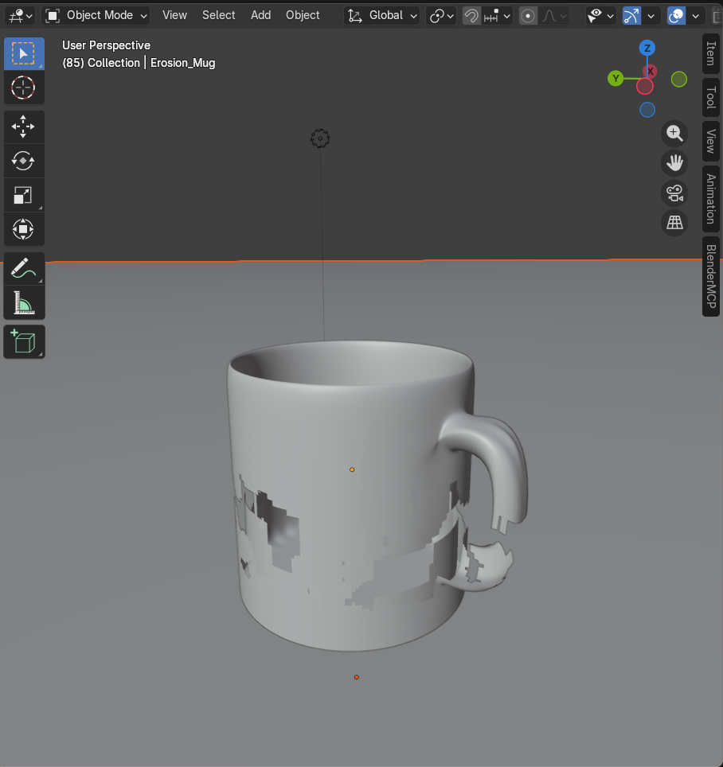
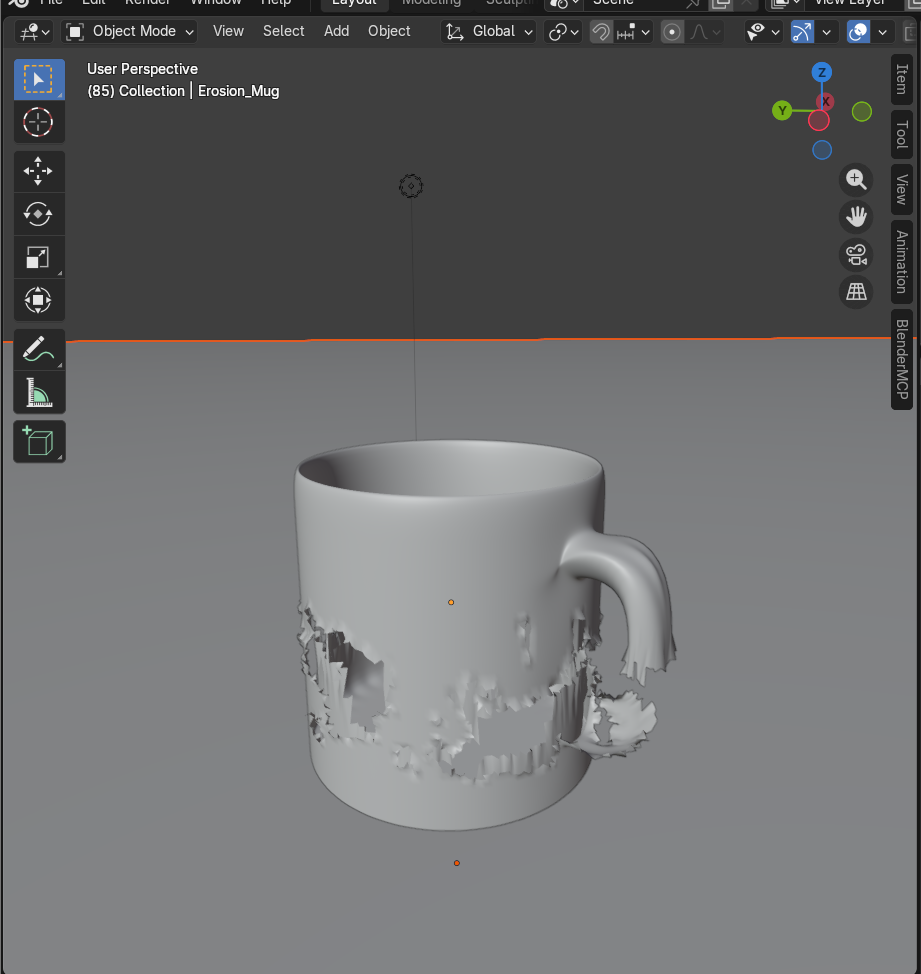
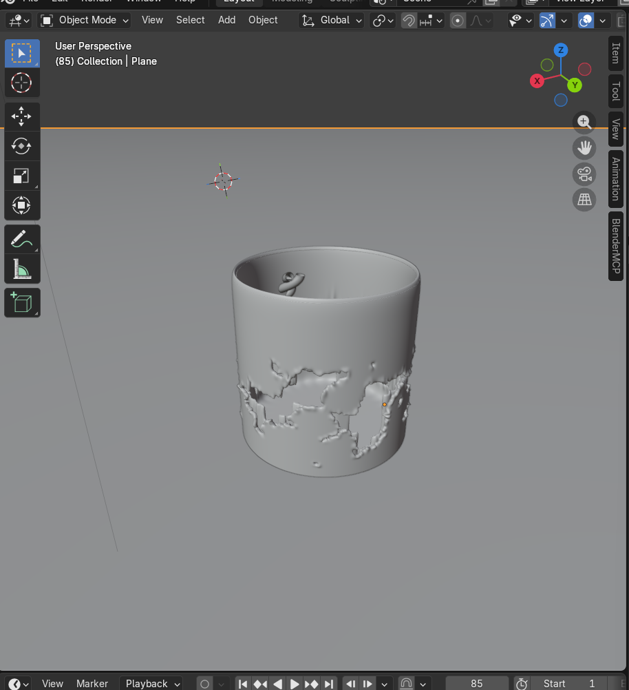
Procedural erosion - where math meets sculpture
Using Voronoi noise + Perlin noise layered together, Claude selected and deleted 4,533 faces from the mug body in a natural, organic pattern. A Solidify modifier gave the broken edges visible ceramic thickness. This was genuinely impressive procedural modeling - the kind of organic destruction pattern that would take a human artist significant manual work.
execute_blender_code -> bmesh face selection via noise.noise(fc * 3.5, noise_basis='VORONOI_F1')execute_blender_code -> delete 1,167 + 3,366 facesexecute_blender_code -> Solidify modifier (thickness=0.04)
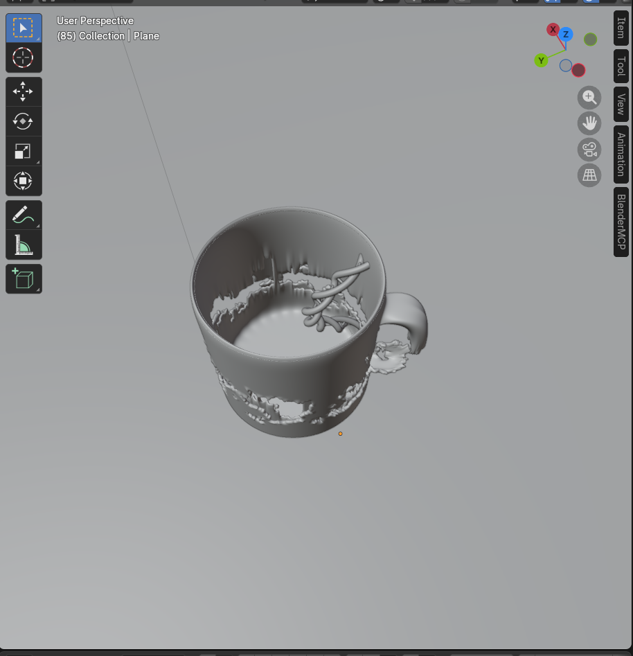
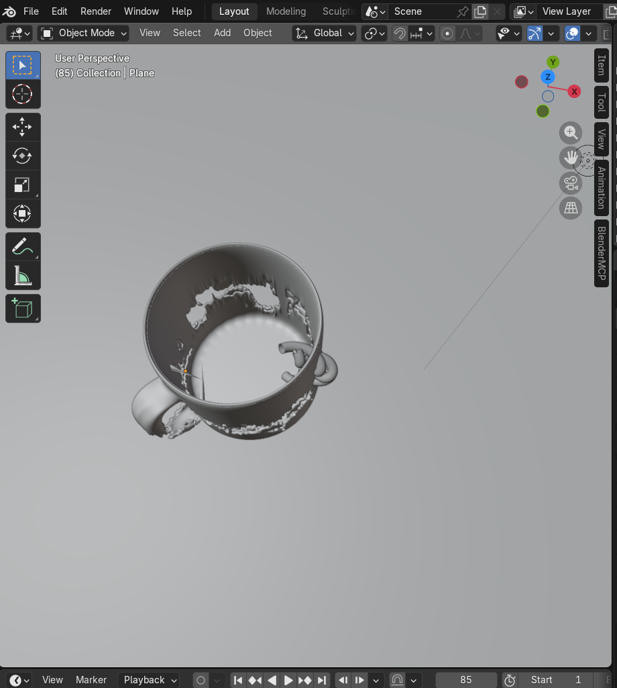
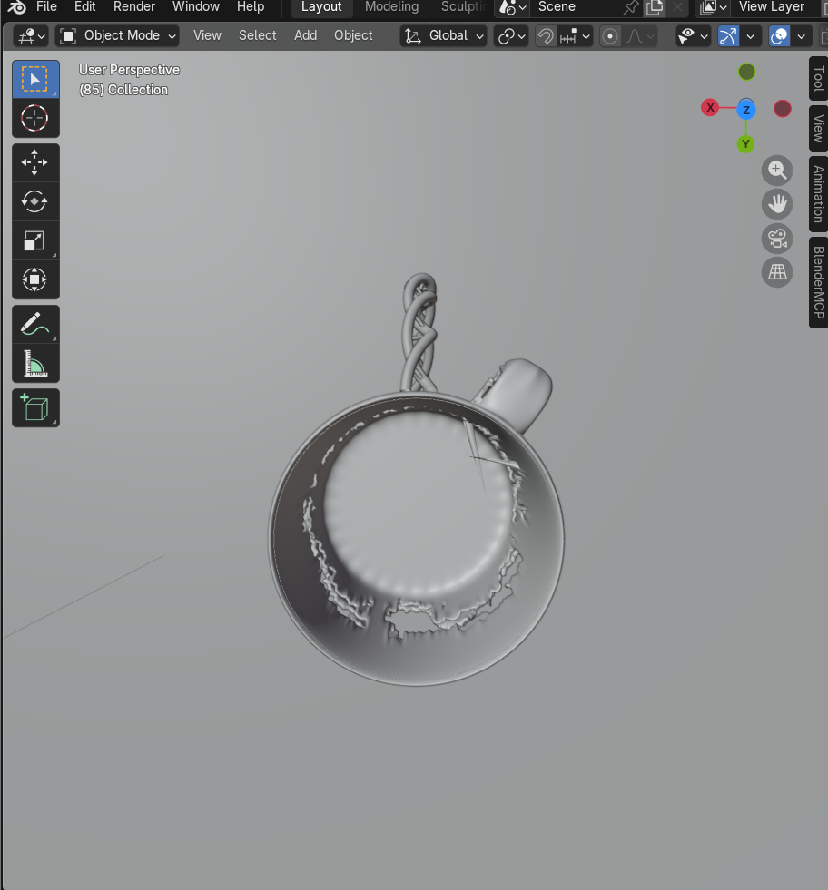
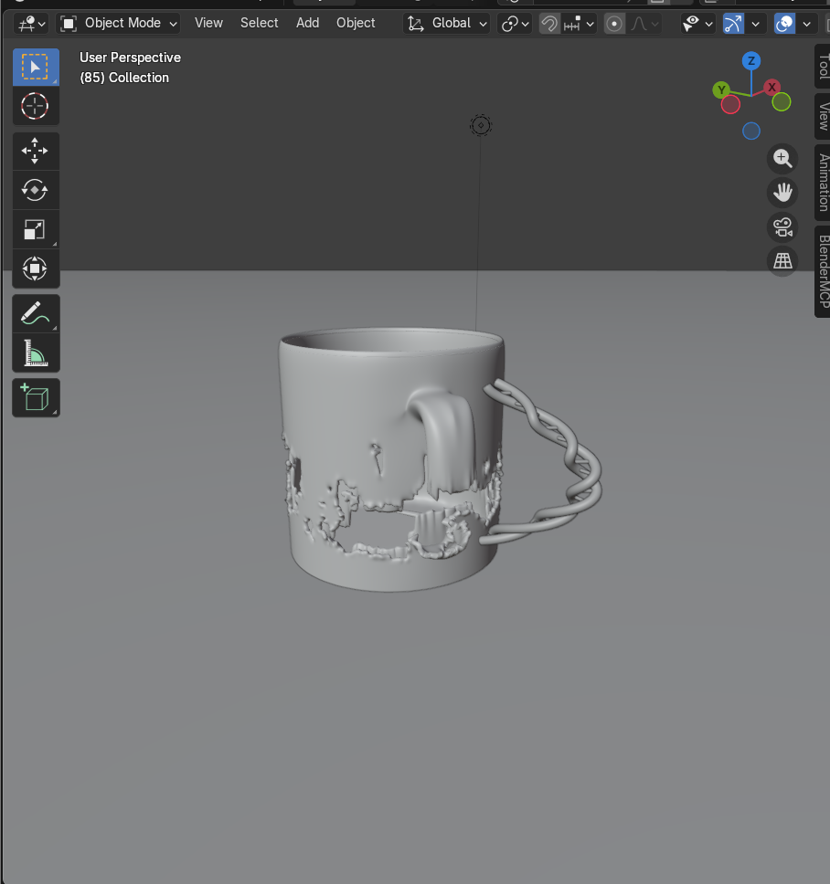
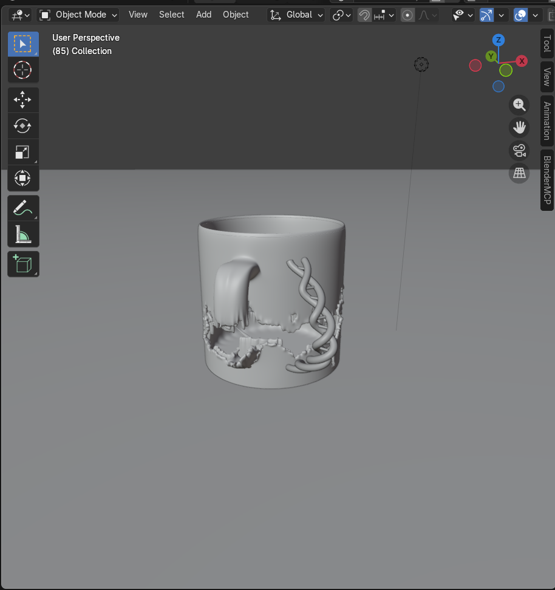
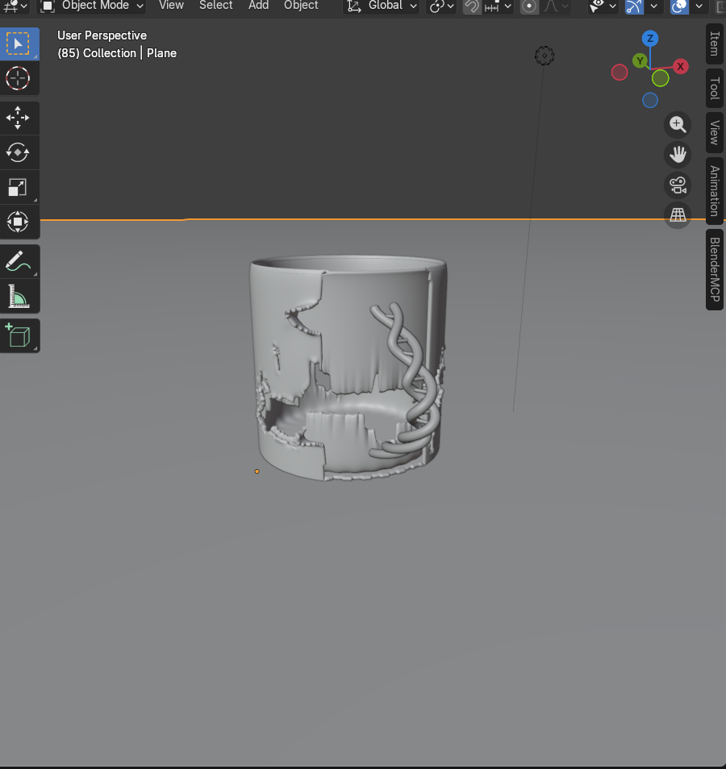
The DNA helix handle: a spatial reasoning problem
The helix appeared inside the mug on the first attempt - wrong coordinate space. Second attempt: still inside. Third attempt: wrong scale. It took 3 complete rebuilds to correctly map local coordinates to world space. The underlying issue: Claude confused the mug's local origin offset (0, 0, 1.193) with its surface geometry bounds.
Boolean operations: the Blender version trap
Cutting the base at an angle hit 3 sequential errors: solver='FAST' doesn't exist (only FLOAT, EXACT, MANIFOLD). EXACT solver's modifier was disabled. Claude abandoned booleans entirely and deleted faces below an angled plane equation - a manual workaround for a tool limitation it didn't anticipate.
Procedural generation (noise patterns, mathematical curves) is Claude's strength. Spatial reasoning in 3D coordinate systems is its persistent weakness - and Blender API version differences create unpredictable failure points.
The pivot. User uploads a reference image. Everything changes.
A stacked-segment mug with a ladder handle. Claude rebuilt the entire scene to match - then the user delivered the most important feedback of the session.
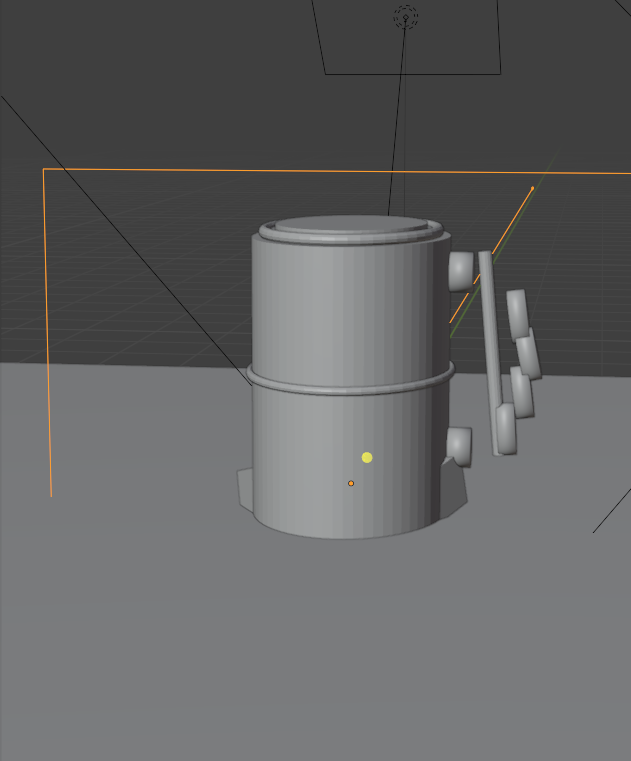
Visual reference changes everything
Claude analyzed the uploaded image: 3 stacked cylindrical segments, horizontal bar handle with ball ends, notch cutouts at the base. It cleared the entire scene and rebuilt from scratch - each segment as a separate hollow cylinder.
The user's verdict: "It looks like a drum, not a coffee mug."
This was the most important moment of the session. The stacked segments were each 0.72 units tall (2.4 total) - proportions that read as industrial barrel, not coffee vessel. The ladder handle floated away from the body. Claude had correctly replicated the reference geometry but failed to understand what makes an object feel like its intended category. This required a fundamental rethink - not a parameter tweak.
AI can replicate geometry with precision. It cannot yet judge whether geometry reads as the intended object. Proportional feel - what makes a mug look like a mug - requires human judgment in the loop.
Back to fundamentals. Third rebuild. This time, the proportions come first.
A tapered cone. A hollowed interior. An ergonomic handle. The simplest version that unambiguously reads as "coffee mug."
Simplicity wins: the mug that looks like a mug
Bottom radius 0.36, top radius 0.42, height 0.95. Hollowed with boolean difference. Smooth shading. Warm cream ceramic material. For the first time in the session, the result immediately reads as "coffee mug." The lesson: start with the archetype, then deviate.
Per-point radius taper: the ergonomic breakthrough
The handle was a NURBS curve with per-point radius values — thinner at attachment points, thicker in the grip zone. Sine-wave modulation created finger bump ridges. This single technique produced a handle that looks designed for a human hand — and it was entirely procedural.
Rapid iteration. The user directs, Claude executes. Single-prompt corrections.
This is where the human-AI collaboration found its rhythm. Each correction was one sentence → one immediate fix.
→ Inverted taper
→ Deleted LipRim
→ bevel 0.022→0.055
→ max_out 0.55→0.32
Decoration warfare. Three failed starfish. 270 orphaned data blocks. Then a solution.
Placing 3D decorations on a curved, tapered surface proved far harder than creating the mug itself.
Cyclic NURBS curves with surface-normal alignment
The winning formula: cyclic NURBS star shape + curve extrude for thickness + surface-normal rotation matrix accounting for the mug's taper angle. Clean geometry, no mesh artifacts, proper orientation on a curved surface. Also: rebuilt the mug body with Solidify modifier instead of boolean to eliminate topology issues.
The final product. Vibrant, decorated, undeniably a mug.
Lavender-to-coral gradient. 60+ decoration objects. 15 custom materials with emission glow. Four rounds of lighting refinement.
2 Sun Designs
12 radiant rays each in orange, yellow, gold, coral, peach, red — built from elongated flattened spheres joined to a central disc
2 Spirals + 4 Swirls
Gold and hot pink spirals wrapping the body (1.5–1.8 loops). Curl doodles in coral, gold, lavender — NURBS with radius taper
3 Distant Waves
Sky blue, mint, lavender — sine-wave undulation along curved mug surface with tapered endpoints
6-Band Rainbow Arc
Red → Orange → Yellow → Green → Blue → Purple — each band as a separate NURBS curve offset by height
6 Starfish + 8 Sparkles
Rainbow starfish (NURBS curves). Four-point sparkle stars from crossed elongated spheres — gold, yellow, white
Hearts, Moons, Diamonds, Clouds
3 hearts (joined spheres + cone). 3 crescent moons (boolean cut). 3 diamonds. 2 clouds (joined puff spheres). 27+ polka dots
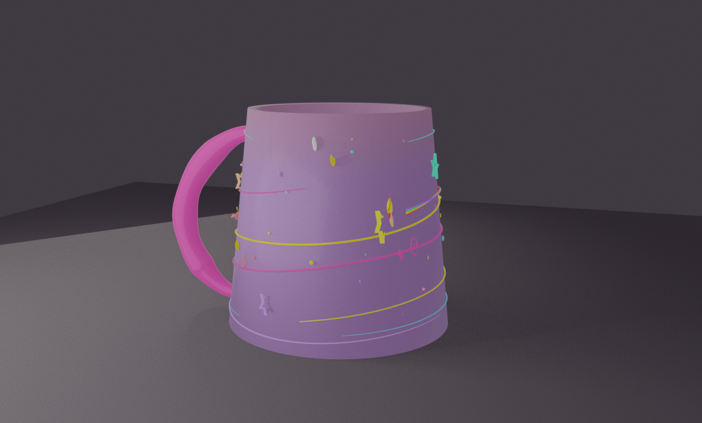

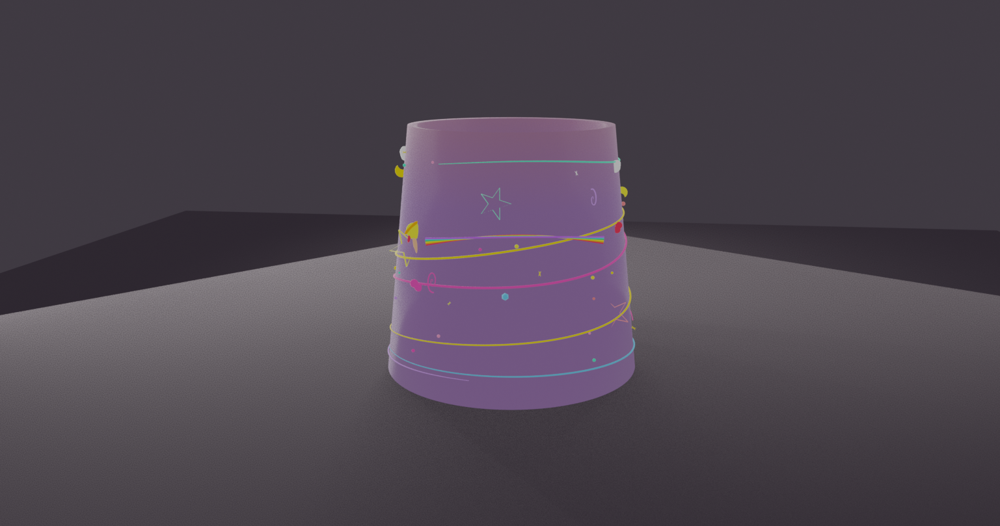
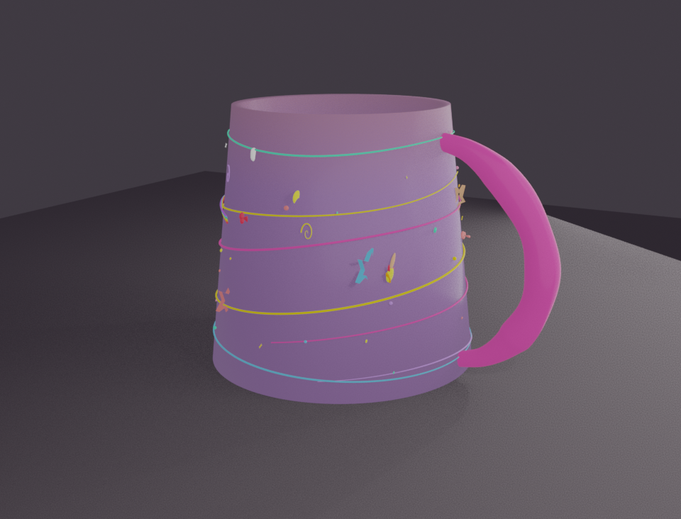
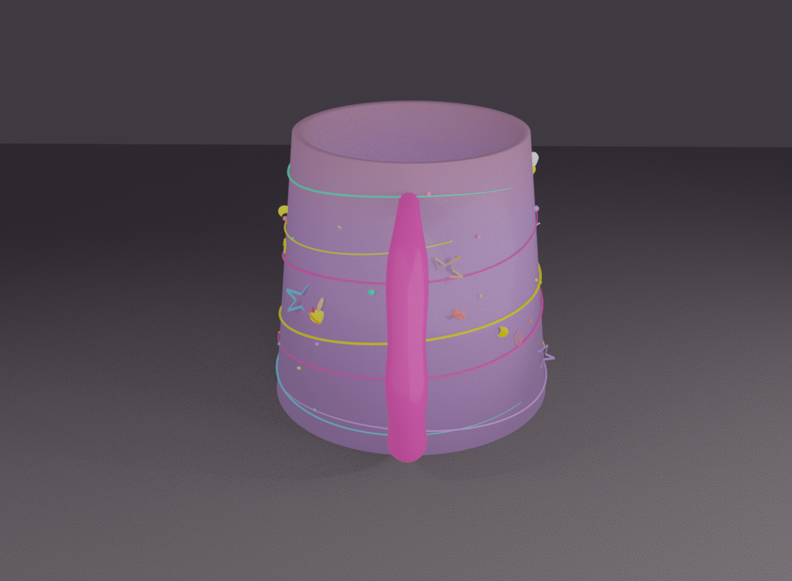
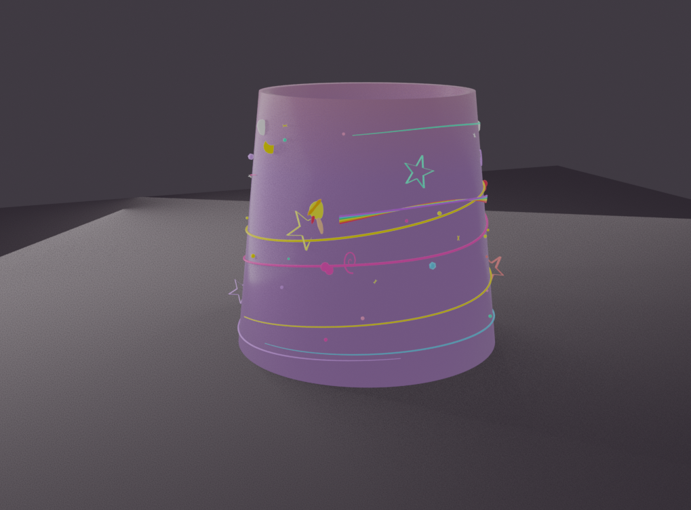
Tap to enlargeThe lighting battle: "still too bright"
Round 1: 3-point studio (200+80+120). "Too heavy." Round 2: Cut 55%. Still too bright. Round 3: Cut again. "Remove top lights." Round 4: All removed. "Add one but gentle." Final: 2 soft area lights (25+12 energy). The decorations' emission glow does the rest.
What works. What doesn't. And the pattern that makes it productive.
Procedural Geometry
Voronoi noise, sine-wave tapers, mathematical curves — Claude excels at code-driven form generation
Material Systems
Complex shader node graphs with gradients, emission, procedural textures — reliably built in a single pass
Rapid Single-Prompt Fixes
"Make bottom wider" → done. "Remove that ring" → done. Specific instructions yield immediate, correct results
Scene Orchestration
Managing 60+ objects, purging orphan data, coordinating materials across objects — reliable infrastructure work
3D Spatial Reasoning
Local vs world coordinates caused the helix handle to be placed incorrectly 3 times — a persistent weakness
Proportional Judgment
The "drum" mug: geometry was technically correct but perceptually wrong. AI lacks intuitive sense of object archetypes
Blender API Fragility
Boolean solver names, SubSurf on complex meshes, modifier application order — version-specific traps cause cascading errors
Subjective Aesthetics
Lighting took 4 rounds. AI defaults to "professional" settings that users consistently find too harsh for stylized work
Claude proposes ambitiously → User gives specific directional feedback → Claude executes the correction immediately. The final product is something neither could have built alone. The human brings proportional judgment and aesthetic taste; the AI brings procedural generation and tireless iteration.